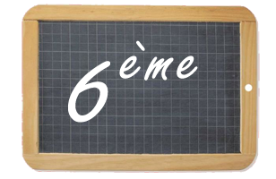
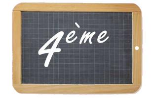

LABO LEBAS
Où on retrouve les maths que l'on fait au collège Alphonse Daudet
Cahier de cours
Cette année, nous organisons la progression de façon spiralée en alternant entre les parties Nombres et calcul, Géométrie et Mesures Voici la liste des cours à copier dans le cahier de cours. Cela vous permettra de rattraper vos éventuels trous dûs à des absences. Profitez-en pour vérifier que vos formules ont correctement été copiées.
- N1 – Nombres entiers et décimaux
- G1 – Repères et translations
- N2 – Additions et soustractions
- M1 - Longueurs et mesures
- G2 - Cercles
- N3 – Multiplications
- M2 - Angles
- G3 - Triangles
- N4 – Divisions
- M3 - Durées
- G4 – Symétrie
- N5 – Fractions
- G5 – Quadrilatères
- D5 – Statistique 2
- M4 - Aires
- N6 – Proportionnalité
- G6 - Solides
- M5 - Volumes
La liste de ces cours sera mise à jour à chaque chapitre terminé
Défis Scratch
Pour que chacun aille à son rythme, voici une série de défis à réaliser sur Scratch. Les premiers défis, tout le monde a déjà réussi à les réaliser en classe, ce ne sera pas la peine de les montrer de nouveau. Il s'agit ensuite d'être capable de faire des figures de plus en plus complexes.
L'objectif est à chaque fois le même : vous devez pouvoir déplacer un lutin en forme de crayon sur une feuille blanche. Et lorsque vous appuyez sur la touche espace, le lutin doit tracer une figure automatiquement.
Pour rendre les devoirs, il vous suffit de les enregistrer sur votre tablette, dans le répertoire Devoirs/lebas, en créant un fichier par défi.
Les défis :
- Défi 1 Sur une feuille blanche, l'utilisateur peut déplacer un crayon en appuyant sur les différentes flèches. La touche "a" permet de poser le crayon sur la feuille, la touche "z" de le relever. La touche "c" permet d'effacer tout ce qu'il y a sur la feuille et de remettre le crayon au centre.
- Défi 2 En plus de toutes les commandes du défi 1, la touche espace permet de tracer un carré de 50 unités de côté.
- Défi 3 En plus de toutes les commandes du défi 1, la touche espace permet de tracer un rectangle de 100 unités à l'horizontale et 30 à la verticale.
- Défi 4 En plus de toutes les commandes du défi 1, la touche espace permet de tracer une étoile à douze branches (cliquer sur le lien pour l'exemple).
- Défi 5 En plus de toutes les commandes du défi 1, la touche espace permet de tracer une double étoile bicolore (cliquer sur le lien pour l'exemple).
- Défi 6 En plus de toutes les commandes du défi 1, la touche espace permet de tracer une triple étoile tricolore (cliquer sur le lien pour l'exemple).
Géométrie 2 - Cercles
Nombres et calcul 1 - Nombres entiers et nombres décimaux
Pour s'entraîner :
- Ecrire différents nombres :
iParcours page 32 - Ecrire les nombres entiers :
iParcours page 5 - Décomposer en fractions :
iParcours page 30 - Comparer les nombres :
iParcours pages 7, 35 et 36
Les jeux :

Page des 6ème
Progression annuelle :
- Nombres entiers et nombres décimaux
- Droites
- Addition, soustraction
- Cercles et médiatrices
- Multiplication
- Angles
- Division
- Triangles particuliers
- Longueurs et mesures
- Fractions
- Quadrilatères
- Proportionnalité
- Symétrie
- Solides
Raccourcis importants
-
Page des 6èmes
Les cours de 6ème -
Page des 4èmes
Les cours de 4ème -
Page des parents
Les cours de M. Lebas -
Atelier Web
Cinéma et web -
Mathador
Exemple de mathador -
Vacances apprenantes
Cinéma et web -
 Pronote
Pronote
Un raccourci vers Pronote -
 Site du collège
Site du collège
Le site du collège, dans lequel vous retrouvez toutes les actualités